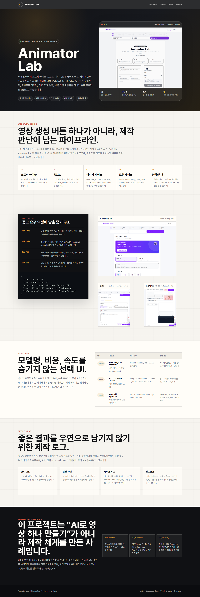
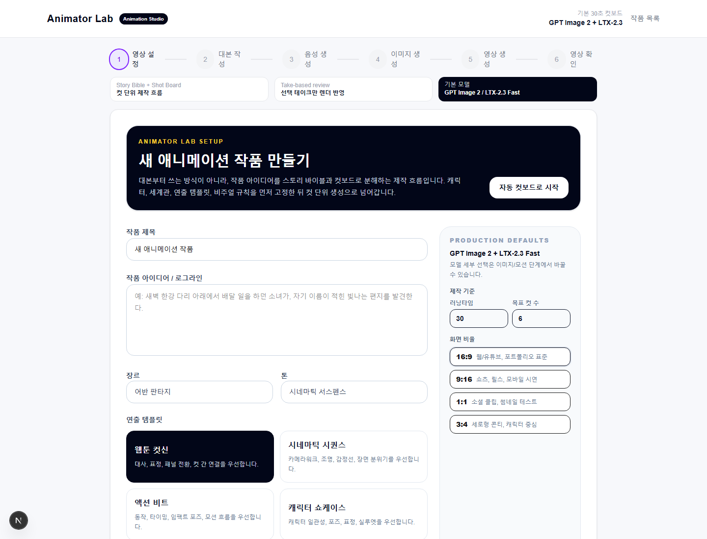
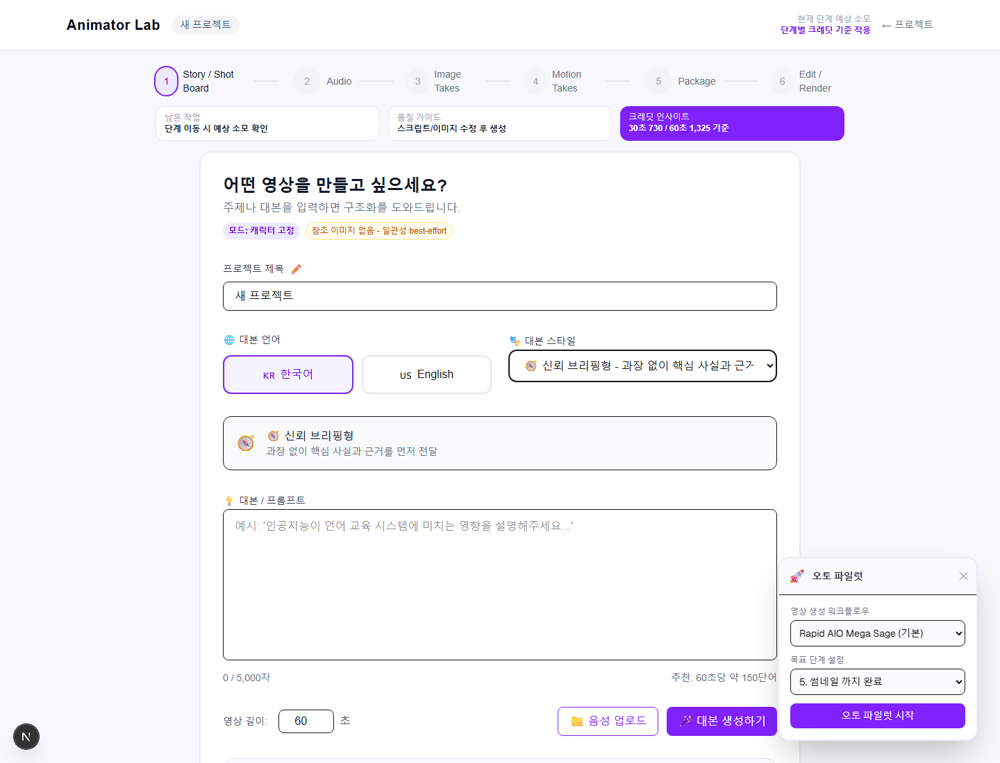
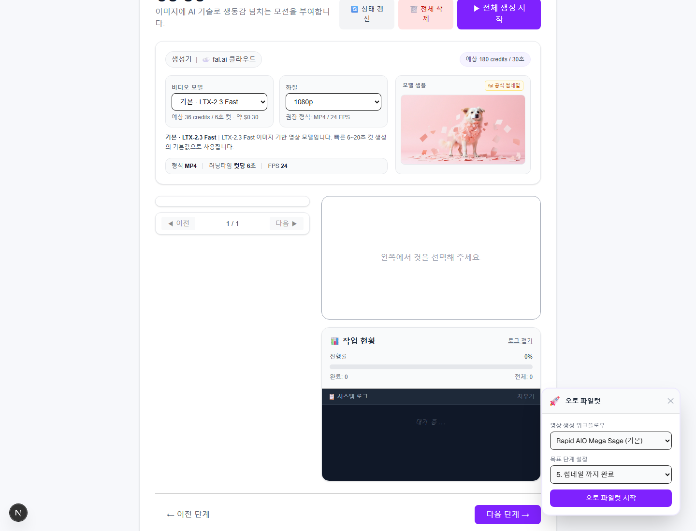
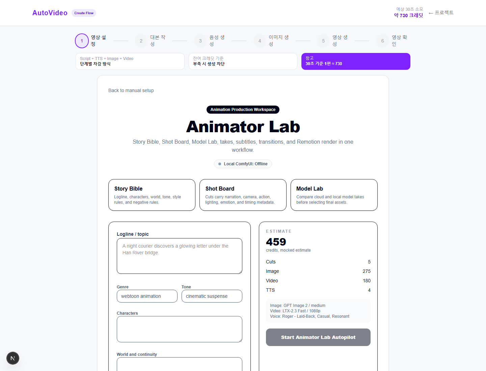

언어화
흩어진 이미지와 연출 의도를 로그라인, 세계관, 스타일 규칙, 금지 요소로 정리합니다.
AI Animation Production Portfolio
Animator Lab은 AI 애니메이션 제작 흐름을 컷 단위로 관리하는 작업대입니다. 주제 입력에서 스토리 바이블, 컷보드, 이미지/모션 take 비교, Remotion 렌더까지 이어지는 제작 흐름을 하나로 묶었습니다.

AI 애니메이션 제작에서 중요한 것은 한 번의 생성보다 컷 사이의 의도, 캐릭터 일관성, 카메라워크, 감정선, 재생성 판단을 반복 가능한 구조로 남기는 것입니다.
흩어진 이미지와 연출 의도를 로그라인, 세계관, 스타일 규칙, 금지 요소로 정리합니다.
대사, 화면 설명, 카메라워크, 액션, 조명, 감정을 컷별 메타데이터로 분리합니다.
여러 모델 결과를 take로 보관하고 선택된 결과만 최종 렌더에 반영합니다.
유료 API를 직접 호출하지 않아도 구조를 이해할 수 있도록 각 단계가 DB와 UI에 남습니다.
Story Bible작품 주제, 장르, 톤, 캐릭터, 세계관, 스타일 규칙을 정리합니다.
Shot Board각 컷을 대사, 화면, 카메라, 액션, 조명, 감정 단위로 편집합니다.
Image / Motion Takes모델별 생성 결과를 비교하고 선택한 take를 컷 결과로 동기화합니다.
Edit / Render선택된 이미지/영상, 자막, 오디오를 Remotion preview와 render로 연결합니다.
포트폴리오용 더미 작품 데이터로 구성한 주요 화면입니다.



